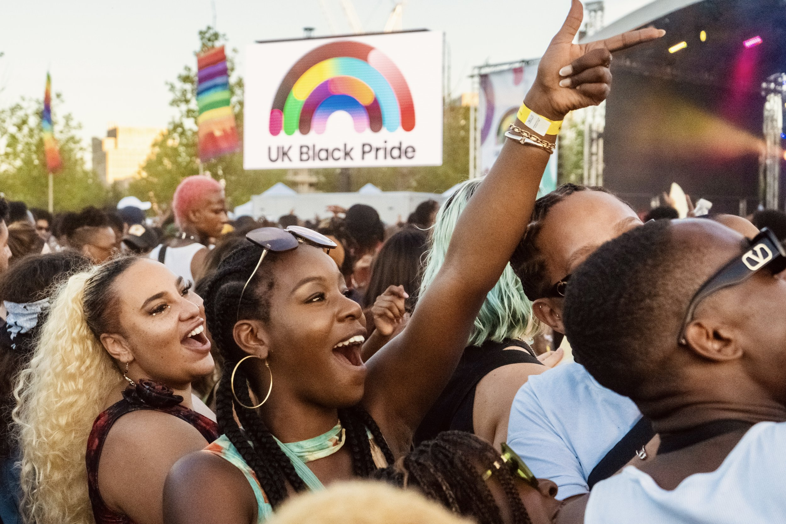
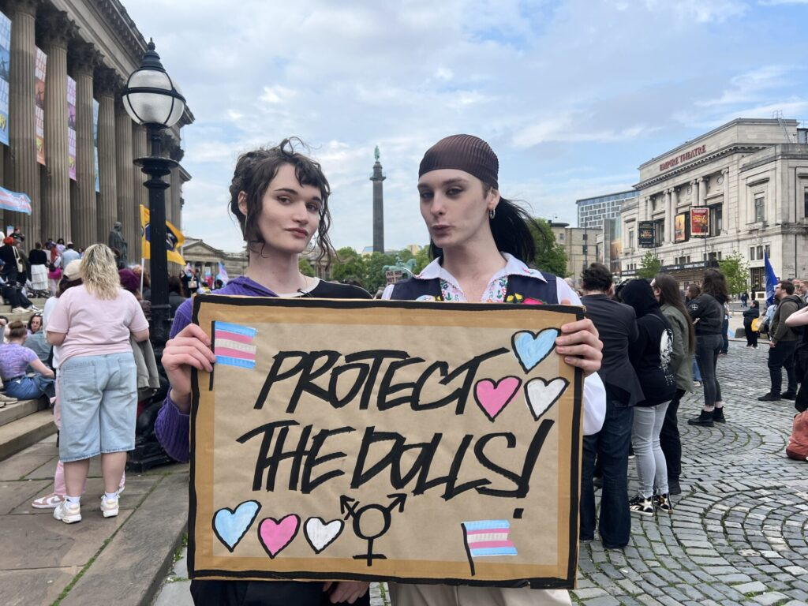

The Black queer community have been working towards creating spaces that can connect and celebrate their diverse identity.

Across universities, Black queer students struggle to find spaces that represent and feel inclusive of their intersectional identity. A recent interview by student and award-winning Black queer writer Taj discusses the difficulty of navigating both predominantly cis-het Black spaces and White queer spaces. He notes the challenges of exclusion from both: either a lack of cultural understanding and microaggressions in White queer spaces, or queerphobia in cis-het Black spaces. He highlights the importance of networking and building a Black queer community to transform these spaces and make them more inclusive for Black queer students.
One recent example of this work is the University of Manchester’s Queerly Black Society, founded in July 2025. The society focuses on creating a “safe space that connects and supports those who identify with the Black queer experience.” It also emphasises the importance of allowing members to be their authentic selves without discrimination or ridicule. The recent formation of this society shows why these spaces matter: they offer Black queer students a place where they feel included and fully able to express themselves.
Another key example is the UK Black Pride festival, which reaches its twentieth anniversary this year. It is considered the world’s largest celebration for Black members of the LGBTQI+ movement. The event aims to promote unity with the broader queer community while challenging the whiteness that often dominates LGBTQI+ spaces. A recent interview with student Abi McIntosh captures the emotional importance of these spaces: she recalls attending UK Black Pride for the first time and feeling that she had “never seen so many Black queer people in the same space.” The development of such celebrations shows how Black queer communities build belonging in spaces that reflect the full complexity of their identities.
Article 02
Struggles of Black Transgender Women
Black transgender women face some of the most severe forms of marginalisation and abuse, placing them at the centre of contemporary discussions of intersectionality.

Recent reports show that Black trans women remain the most targeted group within the transgender community. A report from the Human Rights Campaign Foundation in November 2025 reveals a disproportionate number of cases of fatal violence against Black transgender women since 2013. Out of almost 400 reported cases, 59.4% involved Black transgender women. This pattern reflects the danger faced by those with intersectional identities, who encounter hostility rooted in both gender identity and race.
A column by Shaun Harper discusses the difficulty Black transgender women face in finding inclusive and safe spaces at universities and colleges. In interviews, Harper found that women’s centres and study programmes often felt centred on White women, while LGBTQI+ centres paid too little attention to Black queer experience and to the combined effects of homophobia, transphobia, and racism. At the same time, recent political developments—including anti-DEI policies in the United States and increasingly hostile public rhetoric—have made it harder to establish and maintain spaces that genuinely support and unite Black transgender communities.
Activist Hope Giselle-Godsey argues that events such as the Transgender Day of Remembrance need to go beyond mourning and become catalysts for real structural change. She emphasises that violence against Black transgender women is rooted in social, cultural, and institutional failures, and that remembrance should shift toward prevention and long-term transformation. Her “Blueprint for Change” includes improving safety by holding police accountable, strengthening reporting systems for anti-trans violence, and funding Black trans-led organisations.
The movement “Protect the Dolls” reflects both the visibility and the limits of current solidarity. Popularised during London Fashion Week on 23 February 2025 through a T-shirt designed by Conner Ives, the phrase became widely visible through celebrity support and raised over $600,000 for Trans Lifeline by September 2025. Yet the slogan does not automatically translate into direct support for Black transgender women, despite the phrase’s origins in Black ballroom culture. This gap shows why minority-focused movements must more clearly prioritise those who are most endangered.